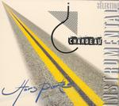

| Artist: | Chardeau |
| Title: | Hors Portee Instrumental Selection |
| Label: | L Records LR0502 |
| Length(s): | 78 minutes |
| Year(s) of release: | 2005 |
| Month of review: | [05/2006] |
| 1) | Introverture | 4.42 |
| 2) | Mort Alternative | 5.23 |
| 3) | Galaxies Alternatives | 5.25 |
| 4) | Pacific Piano/vilon | 3.57 |
| 5) | Cyberwaltz | 3.18 |
| 6) | Cycle 1 | 0.50 |
| 7) | Si Tard | 2.02 |
| 8) | Tard Instrumental | 5.26 |
| 9) | Deambule | 1.28 |
| 10) | Toute Alternative | 4.55 |
| 11) | Cyberspace Data | 3.58 |
| 12) | Ouverture Anll | 2.57 |
| 13) | Preambule | 1.31 |
| 14) | Trafic Nocturne | 4.47 |
| 15) | Tres Tard-Cycle 2 | 1.50 |
| 16) | Mac Gigue | 3.12 |
| 17) | Data Pulsions Web Mix | 6.31 |
| 18) | Cycle 3 | 0.41 |
| 19) | Home Ryhtm | 1.28 |
| 20) | Home | 10.10 |
| 21) | Mes Nuits Instrumentales | 2.23 |
| 22) | Cycles | 0.42 |
Chardeau seperates his work into voyages and portraits. I'm not sure how that relates to this collection of instrumentals, since the liner notes are too French for me to make it out. Chardeau is a keyboardist using both electric piano and assorted synths. Alongside with him play a landslide of other musicians, including Jerry Goodman on violin and assorted guitar players. The music is mostly tranquil, peaceful up to the point of sedate. We get electronics, clear piano, carpets of cheese, artificial choirs and vocoder stuff. And oh, this guy must be really good with his electronics, since I would swear I heard vocals on Data Pulsions Web Mix.
Most of the time the music is more atmospheric than it is strictly melodic. Sure, there is some melodic development, but that does not appear to be the focus. There also is quite a bit of variation in the disc, it is by no means close to new age. Chardeau's claim of ecliticism is one I can't support, however.